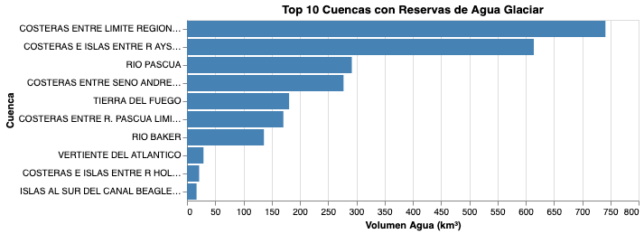

Un país rico en hielo, con sed en el centro
Si uno buscara en un mapa dónde está el agua glaciar de Chile, la respuesta sería clara y casi cruel: está al sur. Muy al sur. Las cuencas con mayores reservas de hielo del país se ubican en la Patagonia y Tierra del Fuego, en territorios donde el agua sobra, donde llueve con fuerza y los ríos no se secan. Mientras tanto, en la zona central, la más poblada y la más sedienta, el hielo es escaso y se derrite más rápido que en ningún otro lugar del país.
Esto es lo que revelan los datos del Inventario Público de Glaciares 2022 (IPG 2022), el catastro oficial del Estado de Chile elaborado por la Dirección General de Aguas (DGA). Al analizar las reservas de agua glaciar por cuenca hidrográfica, emerge una geografía del desequilibrio: diez cuencas concentran la inmensa mayoría del agua congelada del país, y casi todas están en el extremo sur.
La cuenca con más reservas es la de Costeras entre Límite Región y Seno Andrew, con 741 km³ de agua glaciar equivalente. Le sigue la cuenca de Costeras e Islas entre Río Aysén y Río Baker, con 614 km³. En tercer lugar, el Río Pascua, con 292 km³. Son cifras enormes. Y están todas a miles de kilómetros de Santiago.
El agua glaciar de Chile está donde no se necesita con urgencia, y escasea donde más se depende de ella.
La paradoja es evidente: Chile tiene una de las mayores reservas de agua dulce congelada del planeta, pero enfrenta una megasequía que ya supera los quince años en la zona central. La crisis hídrica no es un problema de cuánta agua existe en total —es un problema de dónde está ese agua y cómo se está perdiendo.
En la zona central, los glaciares son pequeños, frágiles y están sometidos a temperaturas crecientes. Son la última reserva antes de que los ríos se queden sin caudal. Y llevan décadas retrocediendo. El IPG 2022 documenta una pérdida de cerca del 8% de la superficie glaciar nacional entre 2014 y 2022. En la Macrozona Centro —que incluye las regiones de Coquimbo, Valparaíso, Metropolitana y O'Higgins— esa pérdida golpea con más fuerza, porque hay menos de dónde perder.
Entender dónde está el agua glaciar no es solo un ejercicio cartográfico. Es el primer paso para entender quién tiene acceso a ella, quién no, y qué podemos esperar si las tendencias actuales continúan.
Los números detrás de la historia
El IPG 2022 es el inventario más completo y reciente sobre el estado de los glaciares en Chile. Sus datos permiten cruzar variables como cuenca hidrográfica, región, tipo de glaciar y volumen de agua estimado. A partir de ese cruce, se construyó la visualización que acompaña esta pieza.
Lo que muestran los datos es contundente: las 10 cuencas con más reservas de agua glaciar están todas en el extremo austral del país. La primera cuenca de la zona central que aparece en el ranking completo ni siquiera entra en el top 10. La Macrozona Austral concentra 18.687 km² de superficie glaciar, mientras que la Macrozona Centro tiene apenas 911 km².
Top 10 cuencas con más agua glaciar

Las 10 cuencas del ranking
- 01 Costeras entre Límite Región y Seno Andrew — 741 km³
- 02 Costeras e Islas entre Río Aysén y Río Baker — 614 km³
- 03 Río Pascua — 292 km³
- 04 Costeras entre Seno Andrew y R. Hollemberg — 277 km³
- 05 Tierra del Fuego — 181 km³
- 06 Costeras entre R. Pascua y Límite Región — 171 km³
- 07 Río Baker — 136 km³
- 08 Vertiente del Atlántico — 29 km³
- 09 Costeras e Islas entre R. Hollemberg y Golfo — 22 km³
- 10 Islas al sur del Canal Beagle — 17 km³
Preguntas que guían la investigación
- ¿Cuánto han disminuido los glaciares en Chile en los últimos años?
- ¿Qué zonas del país están más afectadas por el retroceso glaciar?
- ¿Cómo se relaciona la distribución del agua glaciar con la crisis hídrica?
- ¿Qué regiones dependen más del agua proveniente de glaciares para consumo humano?
- ¿Qué podría pasar si la tendencia de deshielo continúa al ritmo actual?
Fuentes
- Dirección General de Aguas (DGA) — Inventario Público de Glaciares 2022: dga.mop.gob.cl
- Fundación Glaciares Chilenos — Análisis IPG 2022: glaciareschilenos.org
- Portal Agro Chile — Nota oficial DGA: portalagrochile.cl
- Wikipedia — Inventario Público de Glaciares de Chile 2022: es.wikipedia.org